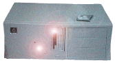

|
 |
 |
 |
 |
 |

Namnet Bifrost är hämtat från den fornnordiska mytologin, där Bifrost är den bro som byggdes mellan Midgård och Asgård och som av människorna kallas för Regnbågen. Den är så stark att den inte förstörs förrän vid Ragnarök - världens undergång. Den vaktas av Heimdall och den röda färg som man ser i den, är en flammande eld som hindrar bergsjättarna från att ta sig upp till Asgård.
Projektets mål är att utröna driftsäkerhet, nätprestanda, filterfunktioner, administration, datasäkerhet, skalbarhet och utvecklingsbarhet hos en Linux-baserad router/brandvägg. Hårdvaran är i grunden en standard-PC med två (eller flera) Ethernetkort (framförallt med Intels Tulip chip eller e1000 Gigabit-kort) och en flashdisk på minst 45 MB (en modern större flashdisk är dock att föredra). Operativsystemet är en modifierad, minimal och optimerad Linux-distribution, med kärnan konfigurerad för brandväggsfunktioner och routing. Filtret som kontrollerar brandväggens säkerhetspolicy är en del av kärnan och kan konfigureras via med iptables.
Senare distributioner har börjat användas som rena Internet-routrar, bestyckade med 1GB minne eller mer.
Den första Bifrost-brandväggen installerades hos institutionen för kemi (SLU) 1997, men fler installationer har senare gjorts inom SLU, UU och en del andra ställen runt om i landet (KTH, KI och andra) - mestadels universitet. Under senare tid har distributionen hittat användare även utomlands.
Bifrost har åtminstone två användningsområden. Den kan fungera som en edge-router och/eller som en brandvägg. Senare versioner fungerar även bra som core-routrar med full Internet-routing. Det finns idag fullt färdiga och körklara distributioner av Bifrost baserat på 2.6-kärnan. Systemet har visat sig vara mycket stabilt och funktionsdugligt. En viktig del av hemligheten bakom stabiliteten ligger förstås i att välja rätt hårdvara.
Som en del av Bifrost har vi något som vi kallar för Bifrost Nomad. Det är verktyg för nätinloggning med autenticering och händelsestyrd routing eller filterhantering. Till detta använder vi bl.a. Apache+OpenSSL och IP-login.
Andra projekt knoppas av och vi använder bl.a. Bifrost som termineringsburk för WLAN (Vagabond), VPN, RADIUS-server, webb och avlyssningssystem.
Arbete sker på 2.6-kärna och förbättringar av e1000-drivern liksom 10Gb-kort. IPv6-stöd är förstås inkluderat. Från och med Bifrost v5.19 använder vi en patchad 2.6.24-kärnan.
Tester av HiPac pågår och det ser mycket lovande ut för enklare former av filtrering, med mycket goda prestanda jämfört med Netfilter.